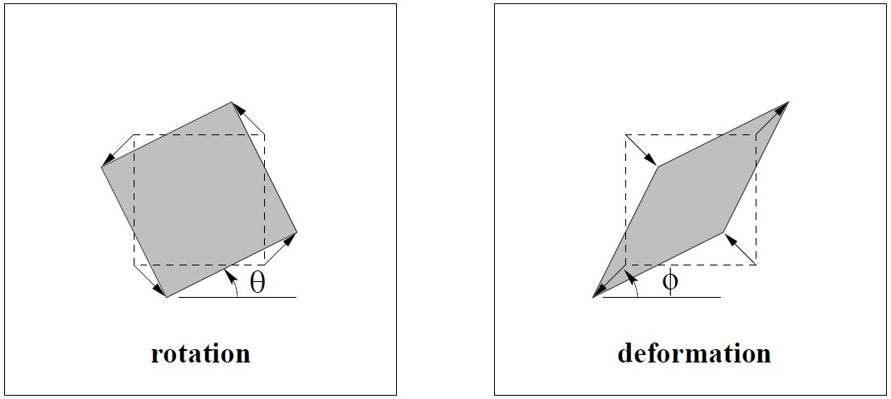

Chapter 2.4 A hierarchy of transformations#
Multiple-View Geometry Chapter 2.4에서는 Isometries, Similarity, Affine, Projective 변환 4가지에 대해 다룹니다.
2D -> 2D로 이동하는 변환이며, 2D 동차좌표계 상에서의 변환이기 때문에 변환은 3*3 행렬로 표현됩니다.
2D vector x_in, x_out과, 변환 H를 정의합니다.
x_in, x_out은 3X1 벡터이며, H는 3X3 행렬입니다.
x_out이 x_in에 변환 H를 적용하는 것을, 대수적으로는 x_out = H(x_in)으로 표현되며, 행렬곱 (H * x_in)으로 계산됩니다.
import numpy as np
import math
# Initialize Vector and Matrix
x_in = np.array([1,0,0])
x_out = np.array([0,0,0])
H = np.array([[1,0,0],
[0,1,0],
[0,0,1]])
np.dot 함수를 통하여 행렬곱 계산을 할 수 있습니다.
x_out = np.dot(H, x_in)
print(x_out)
[1 0 0]
Class I. Isometries#
Isometries 변환은 평행이동 및 회전변환입니다. 두 점 사이의 (직선)거리, 두 선 사이의 각도는 변하지 않고 유지됩니다.
행렬식으로는 다음과 같이 표현됩니다.
\(\begin{bmatrix} \epsilon \, cos \theta & -sin\theta & tx \\ \epsilon \, sin \theta & cos\theta & ty \\ 0 & 0 & 1 \end{bmatrix}\)
여기서 \(\epsilon\)은 1 또는 -1값을 가지며, \(\epsilon\)가 1일때는 변환 후 이미지는 원본 이미지 그대로이고, \(\epsilon\)가 -1일때는 좌우 반전됩니다.
변환 코드는 다음과 같습니다.
\(\begin{bmatrix} x \\ y \\ 1 \end{bmatrix}\) = \(\begin{bmatrix} \epsilon \, cos \theta & -sin\theta & tx \\ \epsilon \, sin \theta & cos\theta & ty \\ 0 & 0 & 1 \end{bmatrix}\) \(\begin{bmatrix} x \\ y \\ 1 \end{bmatrix}\)
오른쪽의 \((x, y)\) 좌표가 Isometries 변환을 통해 \((x^{\prime}, y^{\prime})\) 로 변환됩니다.
평면 유클리드 변환에서,
\({\theta}\)가 존재하는 항은 회전 변환을, \(t_x\), \(t_y\)는 이동 변환을 나타내는 항목이므로 간단히 나타내면 다음과 같습니다.
\(x^{\prime} = H_Ex = \begin{bmatrix} R & t \\ 0^T & 1 \end{bmatrix}\) ( R : 2X2 회전 행렬, t : 2차원 이동 벡터, 0 : 2차원 영벡터 )
# Class I. Isometries
P_Epsilon = 1
P_Theta = math.pi / 3
P_tx = 0
P_ty = 0
H = np.array([[P_Epsilon * np.cos(P_Theta),-np.sin(P_Theta), P_tx],
[P_Epsilon * np.sin(P_Theta),np.cos(P_Theta) , P_ty],
[0,0,1]])
x_out = np.dot(H, x_in)
print('Isometries With Epsilon and Theta')
print(x_out)
Isometries With Epsilon and Theta
[0.5 0.8660254 0. ]
Class II. Similarity#
Similarity 변환은 닮음변환입니다. 직선 사이의 각도, 길이의 비율, 면적의 비율은 변하지 않습니다.
행렬식으로는 다음과 같이 표현됩니다.
\(\begin{bmatrix} F \, cos \theta & -F \ sin\theta & t_x\\ F \, sin \theta & F \ cos\theta & t_y \\ 0 & 0 & 1 \end{bmatrix}\)
여기서 F은 닮음비, \(\theta\)는 회전변환, \(t_x\)와 \(t_y\)는 평행이동입니다. 변환 코드는 다음과 같습니다.
평면 유클리드 변환에서,
\({\theta}\)가 존재하는 항은 회전 변환을, \(t_x\), \(t_y\)는 이동 변환을 나타내는 항목이므로 간단히 나타내면 다음과 같습니다.
\(x^{\prime} = H_Sx = \begin{bmatrix} sR & t \\ 0^T & 1 \end{bmatrix}\) ( R : 2X2 회전 행렬, t : 2차원 이동 벡터, 0 : 2차원 영벡터 )
# Class II. Similarity
P_Scale = 2
P_Theta = math.pi / 3
P_tx = 0
P_ty = 0
H = np.array([[P_Scale * np.cos(P_Theta),-np.sin(P_Theta), P_tx],
[P_Scale * np.sin(P_Theta),np.cos(P_Theta) , P_ty],
[0,0,1]])
x_out = np.dot(H, x_in)
print('Similarity With Scale and Theta')
print(x_out)
Similarity With Scale and Theta
[1. 1.73205081 0. ]
Class III. Affine#
Affine 변환은 회전변환, 평행이동에 이어, x,y좌표로 당기고 미는(stretch) 변환입니다. 평행선은 변환 후에도 변하지 않고 유지됩니다.
선형대수학의 선형변환(Linear Transform)과 동일하다고 볼 수 있으며, 행렬식으로는 다음과 같이 표현됩니다.
\(\begin{bmatrix} a_{11} & a_{12} & t_x \\ a_{21} & a_{22} & t_y \\ 0 & 0 & 1 \end{bmatrix}\)
변환 코드는 다음과 같습니다.
# Class III. Affine
P_a11 = 1
P_a12 = 2
P_a21 = 3
P_a22 = 4
P_tx = 0
P_ty = 0
H = np.array([[P_a11, P_a12, P_tx],
[P_a21, P_a22, P_ty],
[0,0,1]])
x_out = np.dot(H, x_in)
print('Affine')
print(x_out)
Affine
[1 3 0]

Class IV. Projective#
사영변환(Projective Transformation)은 3D 공간상의 한 점을 여러 2D 이미지로 사영하였을 때, 그 2D 이미지들 사이의 변환입니다.
그 2D 이미지들 사이의 관계를 Homography라고도 합니다.
이 변환에서는 직선의 직진성만 보존되며,행렬식으로는 다음과 같이 표현됩니다.
\(\begin{bmatrix} p_{11} & a_{12} & p_{13} \\ p_{21} & p_{22} & p_{23} \\ p_{31} & p_{32} & p_{33} \end{bmatrix}\)
위 행렬은 9개의 독립적인 Scalar로 이루어져 있지만, 동차좌표계이기 때문에 자유도(degree of freedom)는 8입니다. 변환 코드는 다음과 같습니다.
# Class IV. Projective
P_h11 = 1
P_h12 = 2
P_h13 = 3
P_h21 = 4
P_h22 = 5
P_h23 = 6
P_h31 = 7
P_h32 = 8
P_h33 = 9
H = np.array([[P_h11, P_h12, P_h13],
[P_h21, P_h22, P_h23],
[P_h31, P_h32, P_h33]])
x_out = np.dot(H, x_in)
print('Projective Transformation')
print(x_out)
Projective Transformation
[1 4 7]